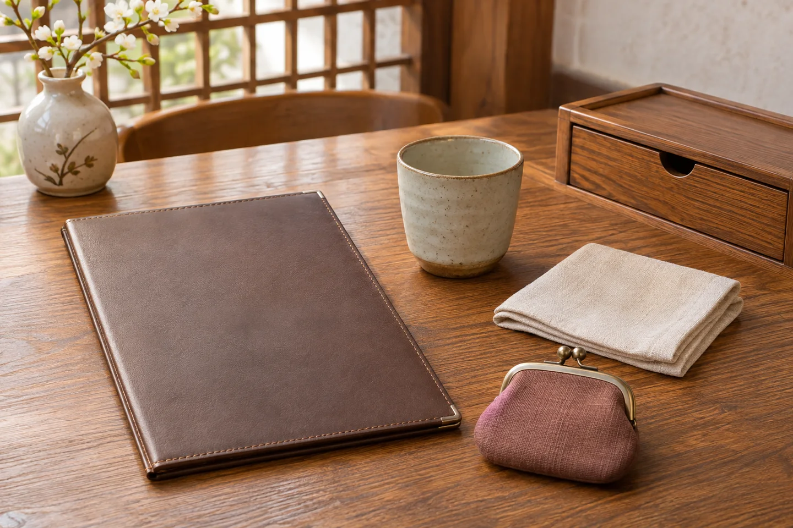
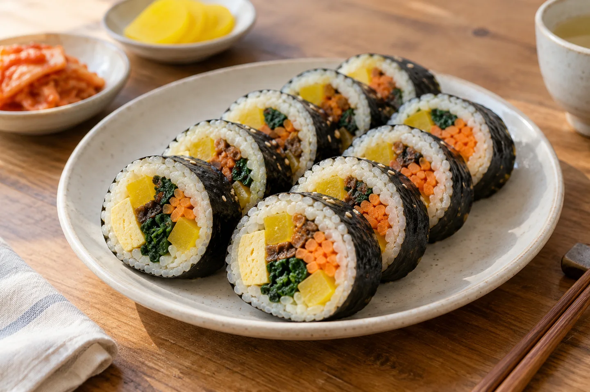

A traditional market can be a place to browse, shop and stop for food. This guide offers a manageable way to prepare for a first visit. It is visitor information, not a personal account of shopping at a particular market.
Choose one small focus.
Korea’s traditional markets offer more than a meal. The Korea Tourism Organization describes Gwangjang Market as a place for food and ingredients as well as hanbok and second-hand goods. Its shopping guide also highlights Namdaemun for a broad mix of food, crafts and souvenirs. These are starting points for choosing a destination, not a promise that every shop sells the same things.
Decide what would make the visit worthwhile for you: a snack, an ingredient to recognize, or a closer look at clothing and everyday objects. Then check the market’s current official information and the particular shops you want to find. Do not assume a food lane, clothing section and night market all keep one timetable.
Leave space in your bag.
A light reusable bag and a short list can make the visit easier to manage. Leave room for a purchase instead of starting with a full backpack. If your day includes a long train ride or flight, think about how you would carry the item before buying it.
Take a first look before deciding. Keep the walkway clear when stopping to read a sign, and ask before handling unpackaged goods or photographing a vendor closely. These are practical courtesies for sharing a working shopping space.
Ask before you order.

VISITKOREA notes that some traditional-market businesses and street shops may accept only cash. Carry a modest amount of Korean won as a backup and ask the individual seller about your payment method before ordering. A card accepted at one shop does not establish what the next stall accepts.
Confirm the item, quantity and total price first. For food, ask whether the displayed price is for one piece, a portion or a set. A simple ‘Eolmayeyo?’ (얼마예요?) means ‘How much is it?’ Pointing to the item and checking the amount together can help keep the exchange clear.
Make room for a food stop.

If food is your focus, choose a stall after looking at its menu and ordering arrangements. Ask whether to take the food away or eat in a designated place. Keep your order manageable so you can enjoy a pause without carrying more than you need.
The gimbap illustration shows how different fillings can sit inside one roll; the actual ingredients and portion depend on the seller. Ask about the dish rather than using a picture as a complete ingredient list. Before moving on, check where to return a tray or dispose of packaging. A short, unhurried visit can be enough for a first introduction.
Sources & before you go
Official sources checked November 16, 2026. VISITKOREA’s payment guidance carries an October 21, 2025 update notice. Shop hours, products, prices and accepted payment methods can change; confirm them with the specific business. The preparation and courtesy suggestions above are general planning advice. All four images are AI-generated illustrations, not documentary market photographs.